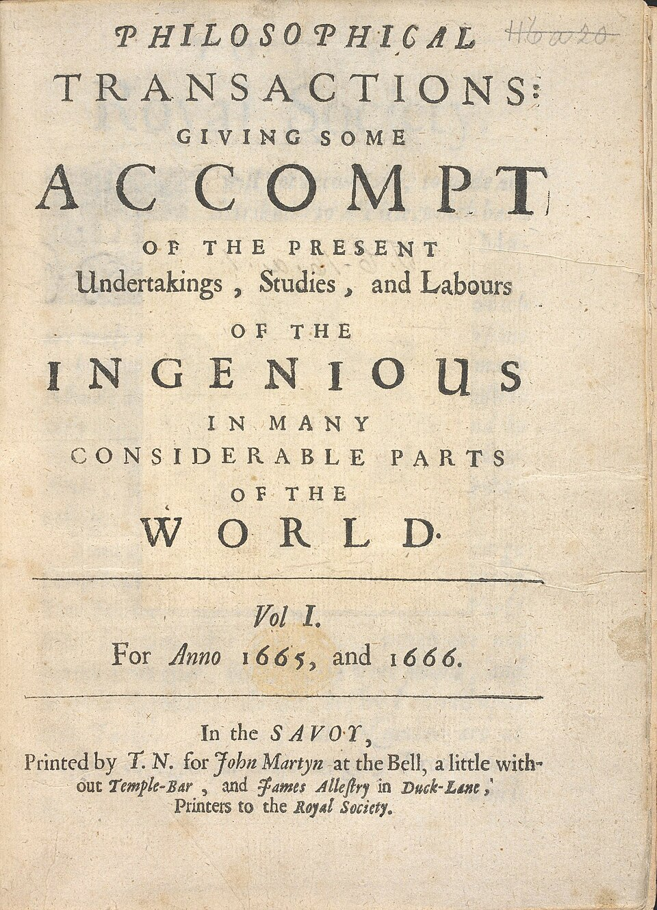
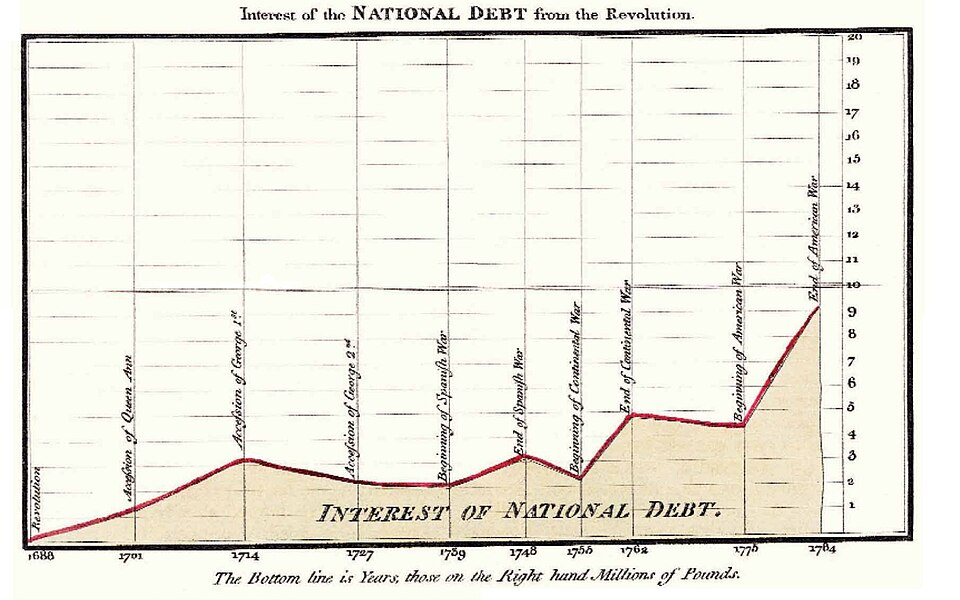

Good morning!
Nur das Schöne wird die Welt retten!
Fjodor Dostojewski
Nicht verzagen, Doc Alvers fragen!
Informatik — Grundkurs 11
Qualität, Vertrauenswürdigkeit, Zielgruppe — und Zahlen kritisch lesen
Nicht verzagen, Doc Alvers fragen!
Kapitel 01
Kriterien für ein begründetes Urteil
Nicht verzagen, Doc Alvers fragen!
Vor zwei Wochen: Recherche — Glaubwürdigkeit an Urheber, Belegen und Aktualität prüfen
Letzte Woche: Informationssysteme — aus falschen Eingaben werden falsche Ergebnisse
Heute: aus vielen Quellen die passende auswählen — und das Urteil begründen
Leitfrage: Fachartikel, Wikipedia, Social Media oder KI — welcher Quelle traue ich wofür?
Nicht verzagen, Doc Alvers fragen!
| Kriterium | Prüffrage |
|---|---|
| Autor | Wer steht dahinter — und ist das überprüfbar? |
| Absicht | Will die Quelle informieren, überzeugen oder verkaufen? |
| Beleglage | Sind die Aussagen belegt und nachprüfbar? |
| Aktualität | Ist der Stand neu genug für meine Frage? |
| Passung | Beantwortet sie meine Frage — und passt sie zu meiner Zielgruppe? |
Ein einzelnes Kriterium entscheidet selten — erst das Zusammenspiel ergibt ein Urteil
Nicht verzagen, Doc Alvers fragen!
Zielgruppenorientierung: Eine Quelle ist für einen bestimmten Leserkreis geschrieben
Danach wählt sie Sprache und Tiefe — Fachaufsatz und Schülerlexikon behandeln dasselbe Thema anders
Beide können richtig sein und trotzdem nicht passen
Zur Bewertung gehört deshalb immer: Für wen ist das geschrieben — und für wen brauche ich es?
Nicht verzagen, Doc Alvers fragen!
Beste Frage nach der Unabhängigkeit: Wer bezahlt die Veröffentlichung — und welches Interesse hat er daran?
Ein Hersteller wird kaum die Nachteile seines Produkts betonen
Interessenkonflikt: Der Verfasser hat einen Vorteil davon, wie das Ergebnis ausfällt
Offengelegt ist er handhabbar, verschwiegen ist er gefährlich
Prüft eine Partei sich selbst, ist das wenig wert — sie braucht eine unabhängige Bestätigung
Nicht verzagen, Doc Alvers fragen!
Kapitel 02
Fachartikel, Wikipedia, Social Media, KI

Nicht verzagen, Doc Alvers fragen!
| Quellenart | Stärke | Vorsicht |
|---|---|---|
| Fachartikel | von Fachleuten geprüft | schwer lesbar, oft hinter einer Bezahlschranke |
| Wikipedia | guter Überblick, Einzelnachweise | Übersicht, nicht die Quelle selbst |
| Social Media | schnell, nah dran | ungeprüft, oft ohne Herkunft, auf Klicks getrimmt |
| KI-Antwort | schnell, gut formuliert | kann Fakten und Quellen erfinden, Herkunft unklar |
Für die aktuelle Rechtslage schlägt alle vier: der Gesetzestext auf einem amtlichen Portal
Nicht verzagen, Doc Alvers fragen!
Peer Review: Andere Fachleute prüfen einen Fachbeitrag vor der Veröffentlichung
Die Gutachterinnen und Gutachter lesen den Beitrag anonym
Sie prüfen Methode, Belege und Schlussfolgerungen
Das ist kein Wahrheitsbeweis — aber eine wirksame Hürde
Nicht verzagen, Doc Alvers fragen!
Zitierfähig ist eine Quelle, die dauerhaft auffindbar ist und eine verantwortliche Herkunft nennt
Bücher, Fachaufsätze und amtliche Seiten sind es — ein Chatverlauf ohne Herkunft nicht
Lässt sich die Herkunft nicht klären: nicht als Beleg verwenden
Plausibel klingen oder oft geteilt werden ersetzt die Prüfung nicht
Besser eine schwächere Aussage mit sauberem Beleg
Nicht verzagen, Doc Alvers fragen!
Tatsachenbehauptung: lässt sich überprüfen — „Der Kurs stieg um drei Prozent“
Meinung: eine Bewertung — „Das ist eine gute Entwicklung“
Tendenziös: wertende Wörter, fehlende Gegenargumente, einseitige Auswahl
Clickbait: eine reißerische Überschrift, die mehr verspricht, als der Text hält
Die Trefferliste sortiert nach Beliebtheit, Vorgeschichte und Bezahlung — nicht nach Richtigkeit
Nicht verzagen, Doc Alvers fragen!
Kapitel 03
Statistiken, Grafiken, Studien

Nicht verzagen, Doc Alvers fragen!
Nachprüfbar wird eine Statistik durch Erhebungszeitraum, Stichprobe und Herausgeber
„80 Prozent sind zufrieden“ — es fehlt: wer befragt wurde, wie viele und wann
80 Prozent von zehn Befragten sind nur Personen
Kleine Stichproben zeigen zufällige Ausschläge — bei zwölf Befragten entscheidet der Zufall stark mit
Nachkommastellen täuschen oft eine Genauigkeit vor, die nicht vorhanden ist
Nicht verzagen, Doc Alvers fragen!
Beginnt die y-Achse bei 90 statt bei 0, sehen kleine Unterschiede dramatisch groß aus
Der abgeschnittene Bereich staucht den Maßstab: zwei Prozent Unterschied füllen das halbe Bild
Die Werte ändern sich dabei nicht — nur der Eindruck
Ehrlich ist das nur mit deutlichem Hinweis auf den Achsenschnitt
Nicht verzagen, Doc Alvers fragen!
Treten zwei Größen gemeinsam auf, belegt das noch keine Ursache
Lehrbuchbeispiel: Storchenzahl und Geburtenzahl können gemeinsam steigen und fallen — der Storch bringt trotzdem keine Kinder
Oft steckt eine dritte Größe dahinter
Eine Ursache zeigt erst ein sauber geplanter Vergleich
Nicht verzagen, Doc Alvers fragen!
Nicht die angenehmere und nicht einfach die neuere nehmen
Den Widerspruch benennen und prüfen, worauf die Angaben jeweils beruhen
Oft messen die Quellen Verschiedenes — oder auf andere Weise
Der Widerspruch ist selbst ein Ergebnis — er gehört so in die Arbeit
Nicht verzagen, Doc Alvers fragen!
Eine gute Quelle ist nicht die erste Trefferzeile, sondern die, deren Autor, Absicht, Belege und Aktualität zu meiner Frage passen — und bei Zahlen frage ich immer: wer, wie viele, wann?
Merksatz
Nicht verzagen, Doc Alvers fragen!
Die Philosophical Transactions erscheinen seit 1665 — die älteste naturwissenschaftliche Fachzeitschrift, die es noch gibt
William Playfair erfand 1786 das Linien- und das Balkendiagramm, 1801 auch das Kreisdiagramm
Einstein war 1936 empört, weil eine Fachzeitschrift seinen Aufsatz einem Gutachter vorlegte — der Gutachter hatte recht
Fällt später ein schwerer Fehler auf, wird ein Fachartikel zurückgezogen: Er bleibt sichtbar, aber als ungültig markiert
Nicht verzagen, Doc Alvers fragen!
Checkliste gemeinsam entwickeln: Welche Prüffragen gehören für euch dazu? Startet mit Autor, Absicht, Beleglage, Aktualität, Passung
Quellenanalyse in Gruppen: dieselbe Frage mit drei Quellenarten beantworten — Fachartikel oder amtliche Seite, Wikipedia, Social Media oder KI
Jede Antwort mit der Checkliste bewerten: Was stimmt, was fehlt, für wen passt es?
Taucht eine Zahl auf: Wer wurde befragt, wie viele, wann?
Zum Schluss: Aufgaben (20) auf der Planseite — Lösung pro Aufgabe zum Aufklappen
Nicht verzagen, Doc Alvers fragen!